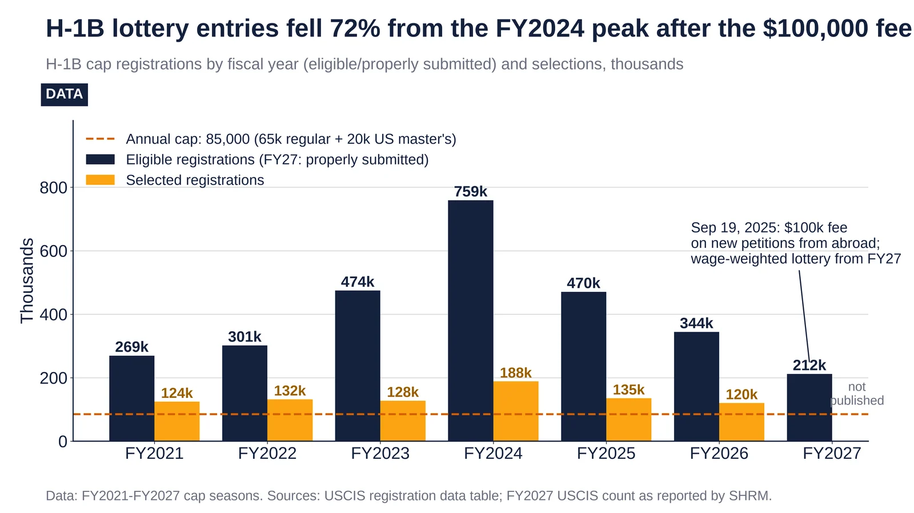
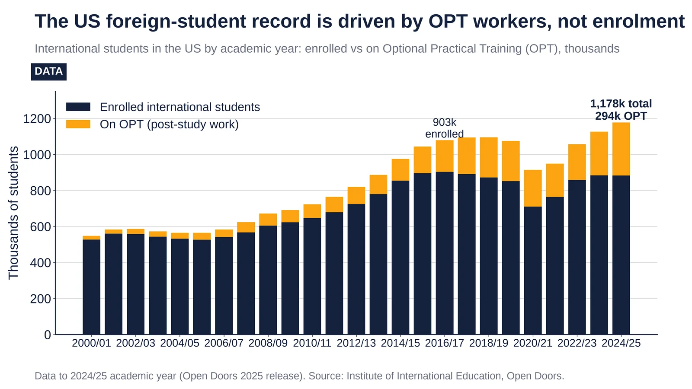
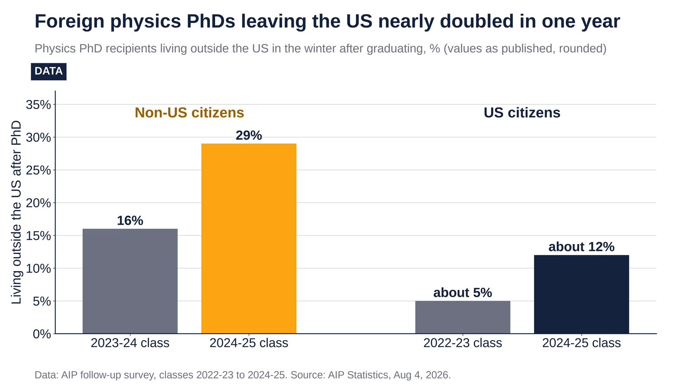

Q4. US Talent Flows
Weekly Focus graphs, started Oct 25, 2026: new charts are added each week from primary or clearly named secondary data. Each caption names its sources and its caveats.

H-1B cap registrations: 759k in FY2024, 212k in FY2027 (−38.5% y/y). Source: USCIS, Oct 2026 check.
- FY2024: 758,994 eligible registrations, the peak.
- Sep 19, 2025: a proclamation imposed a $100,000 fee on new H-1B petitions for workers abroad.
- FY2027: 211,600 properly submitted registrations, down 38.5% from 343,981. It was the first wage-weighted lottery.
- FY2027 selections: 71.5% held US advanced degrees, up from 57%, and 17.7% were at wage level I.
Sources: USCIS, H-1B electronic registration process USCIS, FY2027 H-1B registration selection completed SHRM, USCIS reaches FY2027 H-1B cap

2024/25: 1,177,766 international students; 294,253 on OPT, while enrolled is flat since 2016/17. Source: IIE Open Doors.
- 2016/17: 903,127 enrolled, the high point.
- 2024/25: 883,513 enrolled, 2% below 2016/17.
- 2024/25: 294,253 on OPT, a record and 25% of the total. Up from 175,695 in 2016/17.
- The total is 1,177,766, up 4.5% year on year.
Sources: IIE Open Doors enrollment census 1949-2025 (xlsx) IIE Open Doors, international students

Non-citizen physics PhDs abroad after graduating: 16% (2023-24) to 29% (2024-25). Source: AIP, Aug 4, 2026.
- 2023-24 class: about 16% of non-US-citizen physics PhDs lived abroad the winter after graduating.
- 2024-25 class: about 29%.
- US citizens: about 5% for the 2022-23 class and almost 12% for 2024-25.
- Apr 2025: Nature reported US scientists' applications for jobs abroad up 32% in Jan–Mar 2025.
Sources: AIP, more US-trained physics PhDs are leaving the US Nature news